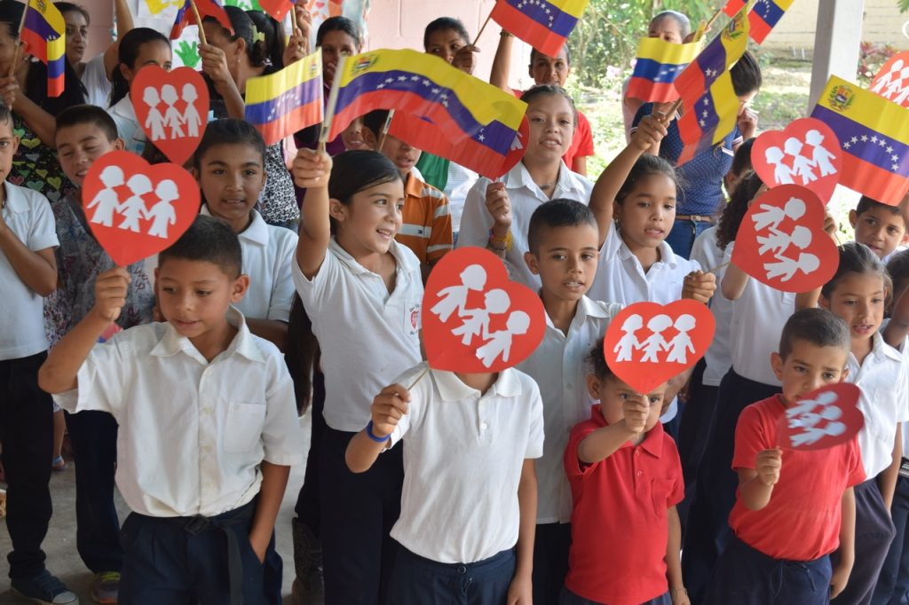
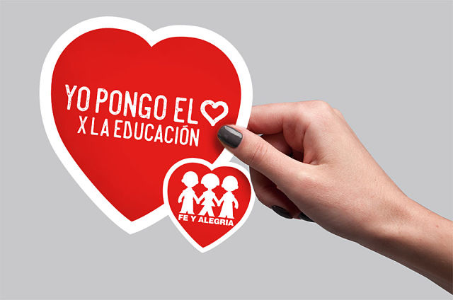

¿Quiénes Somos?
La Unidad Educativa Fe y Alegría Ana Soto es una institución comprometida con la educación de calidad dirigida a niños, niñas y adolescentes de bajos recursos económico. Formamos parte de la red global de Fe y Alegría y basamos nuestra propuesta en los valores del Evangelio, integrando el carisma Pasionista y la Espiritualidad Ignaciana para modelar ciudadanos íntegros. Nuestro objetivo primordial es fortalecer el desarrollo pleno del individuo, impulsando su capacidad para ser el protagonista de su propio aprendizaje y un agente de cambio en la sociedad, promoviendo la justicia, la democracia y la solidaridad.
Misión
Ofrecer a los niños, niñas y jóvenes una educación de calidad con una propuesta pedagógica basada en la formación técnica e integral del individuo, fortaleciendo el pleno desarrollo de todas sus habilidades y potencial.
Visión
Nuestra visión está orientada a brindar una educación de calidad para niños, niñas y adolescentes de bajos recursos económicos, cimentada en los valores del Evangelio bajo el carisma Pasionista y la Espiritualidad Ignaciana.
Valores
Nuestra institución promueve un sólido conjunto de valores que son el pilar de nuestra formación humano-cristiana. Estos valores guían el desarrollo de cada miembro de nuestra comunidad: Amor, Fraternidad, Justicia y Solidaridad,